VIG-LAN
O Vigia Digital e Inteligente da sua Rede e Internet
Descubra tudo o que acontece no seu Wi-Fi e na sua conexão de internet.
Saiba quem está conectado, descubra se estão roubando sua senha, encontre quem está deixando a internet lenta e receba alertas se a conexão cair — tudo de forma visual, simples e 100% no seu computador.
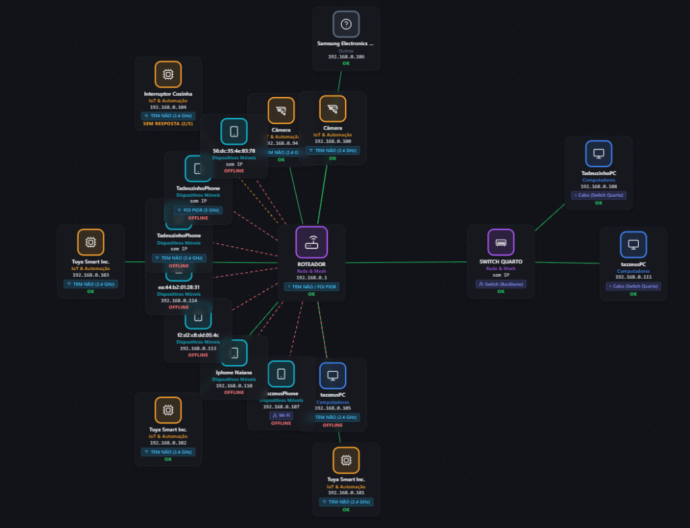
🗺️ Mapa Topológico Interativo da Rede (React Flow)
Visão gráfica e dinâmica de todos os equipamentos conectados ao Wi-Fi e cabo (roteador, switch, computadores, celulares e IoT), com identificação de tráfego e status ativo/inativo sem depender de credenciais de roteador.
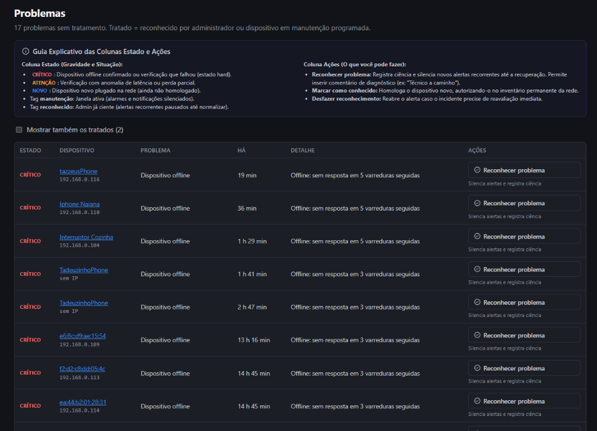
🛡️ Central de Problemas & Detecção de Intrusos
Alerta imediato de aparelhos não homologados, anomalias de latência, quedas e histórico de incidentes com fluxo de reconhecimento rápido.
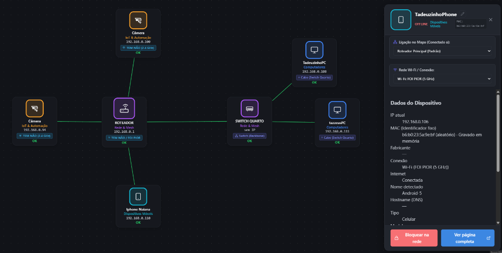
🔍 Ficha Técnica & Fingerprinting de Dispositivos
Perfil completo com fabricante, endereço MAC real, IP atribuído, histórico de presença e latência em milissegundos.
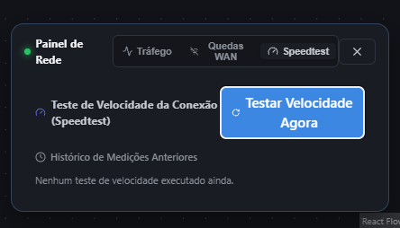
⚡ Painel de Speedtest & Histórico de Velocidade
Medições periódicas automatizadas de download, upload e jitter para comprovar a estabilidade da operadora de internet.
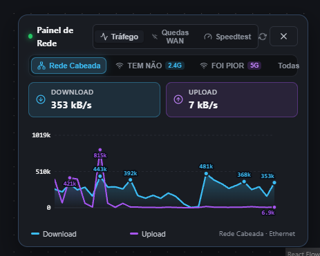
📈 Monitoramento Contínuo de Tráfego
Gráficos de vazão e consumo de dados por interface para diagnosticar gargalos e aparelhos sobrecarregando a conexão.
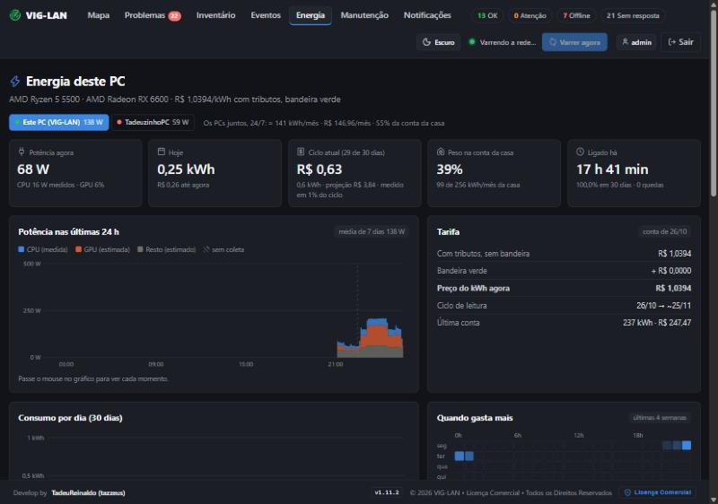
🔌 Painel de Energia dos PCs da Casa
Potência agora, gasto do dia e do ciclo da conta de luz em reais, programas que mais pesam e tempo ligado, deste PC e dos outros PCs da casa com um agente leve.
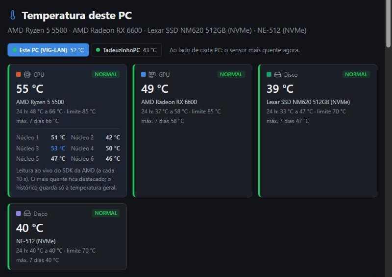
🌡️ Temperatura do Processador, de Cada Núcleo, da GPU e dos Discos
Leitura a cada minuto com histórico, limites por sensor e avisos no celular; processador AMD Ryzen pelo kit oficial da AMD, com a temperatura de cada núcleo ao vivo.
💡 O Que é o VIG-LAN?
Imagine ter um painel de bordo da sua casa ou empresa que mostra, em uma tela bonita e fácil de entender, cada celular, televisão, computador, câmera de segurança ou videogame conectado ao seu Wi-Fi.
O VIG-LAN funciona silenciosamente no seu computador com Windows, cuidando da saúde da sua rede 24 horas por dia, sem que você precise entender nada de termos técnicos ou comandos difíceis.
🔒 100% Privado e Seguro: Nada do que você faz, suas senhas, nomes de aparelhos ou histórico são enviados para a nuvem de ninguém. Tudo fica guardado exclusivamente no seu próprio computador.
📱 Não Precisa Instalar Nada nos Aparelhos: Você não precisa pedir o celular de ninguém, nem instalar aplicativos em TVs ou computadores da casa. O VIG-LAN descobre tudo pelo ar, sozinho.
⚡ Leve e Automático: Consome menos memória do que uma aba do navegador e roda sozinho em segundo plano, subindo junto com o Windows.
🛡️ Dúvida Frequente: O VIG-LAN se Conecta ao Roteador ou aos Dispositivos? Como Monitora?
Essa é uma excelente pergunta e é natural ter essa dúvida! A resposta curta e direta é: o sistema não invade o seu roteador, não entra dentro de nenhum celular e não tem acesso a nada pessoal seu.
Para você entender de forma simples como ele funciona, imagine a sua casa como uma sala de reuniões:
Ele se conecta ou invade o roteador?
Não! O VIG-LAN não pede a senha do seu roteador e não altera nenhuma configuração dele. Ele se comporta na sua rede exatamente igual à sua Smart TV ou ao seu videogame: apenas como mais um aparelho comum conectado ao Wi-Fi.Ele se conecta ou invade os celulares e computadores da casa?
Não! Ele não tem nenhum acesso ao conteúdo dos aparelhos. Ele não vê conversas de WhatsApp, não vê fotos, não vê senhas nem sites que você acessa. Cada celular continua totalmente protegido e blindado.Então, como ele consegue monitorar tudo?
Todo aparelho conectado a uma rede Wi-Fi (seja uma lâmpada inteligente, uma TV ou um celular) precisa anunciar que está ali para a internet funcionar.
O VIG-LAN funciona como um vigia educado na sala: de tempos em tempos, ele manda uma mensagem pelo ar dizendo: "Aparelho X, você ainda está aí?". O celular ou a TV respondem automaticamente: "Sim, estou aqui!".
- Se o aparelho responder: o sistema marca uma bolinha verde na tela.
- Se o aparelho não responder por alguns minutos: ele avisa que aquele aparelho desligou ou saiu de casa.
- Se um aparelho que ele nunca viu responder: ele te avisa que alguém novo conectou na sua rede.
- E para onde vão os meus dados?
Para lugar nenhum. O programa roda 100% gravado no seu próprio computador. Ele não manda suas informações para empresas na nuvem, não vende seus dados e não precisa de cadastro na internet. Tudo fica na sua própria máquina.
🎯 Quais Problemas o VIG-LAN Resolve Para Você?
- Alguém está usando seu Wi-Fi escondido?
O VIG-LAN identifica na hora qualquer aparelho novo ou desconhecido que se conectar à sua rede e emite um alerta para você saber quem é. - A internet está lenta do nada?
Veja exatamente qual computador, TV ou celular está consumindo toda a velocidade com vídeos pesados, downloads ou jogos. - A internet caiu de verdade ou é o roteador que travou?
O sistema diferencia quedas do seu provedor (Claro, Vivo, Starlink, etc.) de travamentos do seu roteador, registrando a data e a hora exata de cada queda para você cobrar desconto na sua fatura. - Quem está em casa ou no escritório agora?
Um sensor de presença simples mostra quais familiares ou funcionários estão no local e há quanto tempo chegaram, apenas pelo sinal do Wi-Fi. - Quanto custa deixar o PC servidor ligado 24 horas?
O painel de Energia mede o processador, estima o resto do PC e mostra a potência agora, o gasto do dia e do ciclo da sua conta de luz em reais, os programas que mais pesam, há quanto tempo o PC está ligado e as quedas de energia. Outros PCs da casa entram com um agente pequeno instalado neles (tools/agente-energia). - O PC está esquentando demais?
A aba Temperatura mostra o processador (AMD Ryzen, com cada núcleo), a placa de vídeo e os discos de cada PC (agora, últimas 24 h, por dia e por hora), guarda as vezes em que passaram do limite e avisa pelos mesmos canais quando esquentam. - Câmeras ou aparelhos importantes pararam de funcionar?
Receba avisos imediatos no seu WhatsApp ou Telegram se uma câmera de segurança, impressora ou computador importante perder a conexão.
🎁 Bônus & Diferencial Exclusivo: Alertas no Celular via Telegram (Sem Instalar Apps Extras)
Enquanto a maioria dos sistemas corporativos exige a instalação de aplicativos complexos ou serviços pagos de SMS/Push (como ntfy, Zabbix ou gateways na nuvem), o VIG-LAN traz uma integração nativa e 100% gratuita com o Telegram.
Você recebe avisos imediatos no celular onde estiver quando:
- Um aparelho novo ou intruso entrar no seu Wi-Fi;
- A internet cair (registrando hora e minuto exatos);
- A internet for restabelecida (informando o tempo total fora do ar);
- Um aparelho essencial parar de responder (como câmeras de segurança, servidores, Smart TVs ou impressoras).
🌟 Por Que Esse é um Grande Diferencial do VIG-LAN?
- 📱 Zero Apps Desconhecidos no Celular: Você já usa o Telegram no seu dia a dia. Não precisa instalar apps de terceiros, pesados ou desconhecidos no seu smartphone.
- 💸 100% Grátis e Ilimitado: Sem limite de mensagens, sem taxa por SMS e sem pagar nenhuma mensalidade extra por alertas.
- 🔒 Privacidade & Criptografia Windows DPAPI: O token do seu bot fica protegido pelas credenciais da sua conta do Windows com a API nativa DPAPI. O código nunca vaza para a nuvem.
- ⚙️ Fácil e Rápido: Configuração concluída em menos de 3 minutos.
📲 Tutorial Passo a Passo: Como Configurar em 3 Minutos
Passo 1: Criar seu Bot no Telegram
- Abra o Telegram (no celular ou computador), pesquise por
@BotFather(verifique o selo oficial de verificado) e clique em Começar (ou envie/start). - Envie o comando:
/newbot - O BotFather pedirá:
- Um nome de exibição para o bot (ex:
VIG-LAN Alertas). - Um nome de usuário que termine obrigatoriamente com
bot(ex:viglan_casa_bot).
- Um nome de exibição para o bot (ex:
- Ao concluir, ele fornecerá o seu HTTP API Token (formato:
1234567890:ABCdefGhIJKlmNoPQRsTUVwxyZ). Copie esse código.
Passo 2: Iniciar Conversa com o Bot e Pegar seu Chat ID
- Importante: Abra a conversa com o bot que você acabou de criar (clique no link fornecido pelo BotFather) e clique em Começar (ou envie
/start).
(Sem esse primeiro contato, o Telegram bloqueia o envio de mensagens do bot por proteção contra spam). - Para descobrir seu número de Chat ID:
- Pesquise pelo bot
@userinfobotno Telegram e envie/start. - Ele responderá na hora com os seus dados, incluindo o seu
Id:(número de 9 ou 10 dígitos, ex.:987654321). Copie esse número.
- Pesquise pelo bot
Passo 3: Cadastrar o Canal no VIG-LAN
- Abra o painel do VIG-LAN no navegador (
http://localhost:5173ouhttp://localhost:8080). - No menu lateral, acesse a aba Notificações.
- Clique em Novo canal (ou no botão
+). - Preencha os campos:
- Serviço: Selecione
Telegram. - Nome: Dê um nome amigável (ex.:
Telegram Pessoal). - Token do bot: Cole o token recebido do
@BotFather. - Chat id: Cole o número recebido do
@userinfobot.
- Serviço: Selecione
- Clique em Salvar canal.
Passo 4: Testar e Personalizar Alertas
- No card do canal cadastrado, clique em Enviar teste. Em segundos você receberá uma notificação no Telegram!
- Marque ou desmarque o que você deseja receber:
- Problemas: quando a internet cair ou um aparelho crítico falhar.
- Recuperações: quando o sinal voltar ao normal.
- Dispositivos novos: assim que um visitante ou vizinho conectar na rede.
⚡ Painel de Energia (PC ligado 24 horas)
A página Energia mostra quanto o PC servidor gasta e quanto isso custa na sua conta de luz:
- Potência agora, gasto de hoje e do ciclo de leitura da sua conta em reais, com projeção do mês;
- Peso na conta da casa, comparando com as suas faturas (tarifa real, bandeira e composição da conta);
- Programas que mais gastam, horários de maior consumo e consumo por dia;
- Ligado, desligado e quedas de energia (inclusive desligamentos sem aviso e a inicialização rápida do Windows).
O processador é medido pelo próprio Windows; placa de vídeo, placa-mãe, discos e fonte são estimados (ajustáveis na página). Outros PCs da casa entram com um agente pequeno instalado neles (tools/agente-energia): o VIG-LAN busca as medições a cada minuto, e este PC continua sem abrir portas na rede.
| Consumo por dia, horários e conta da casa | Programas que mais gastam e tempo ligado |
|---|---|
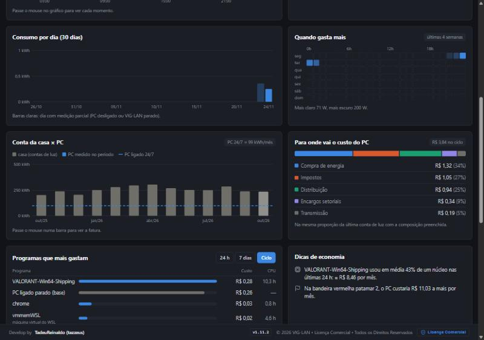 |
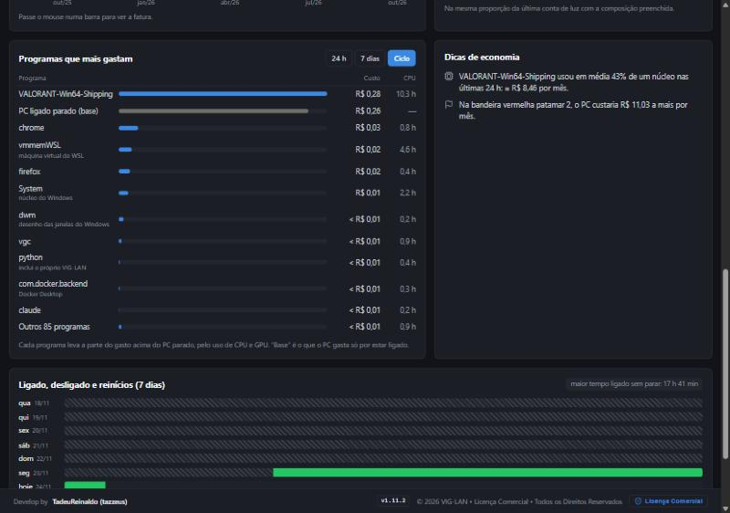 |
🌡️ Temperatura dos PCs
A página Temperatura acompanha o processador (AMD Ryzen), a placa de vídeo e os discos deste PC e dos outros PCs da casa que têm o agente:
- Agora (atualiza a cada 10 s), mínima e máxima das últimas 24 h, gráfico das 24 h com o limite de cada sensor e mínima/máxima de cada dia;
- Limite por sensor, editável na própria página: 85 °C no processador e na placa de vídeo e 70 °C nos discos, ou o alerta do próprio disco quando ele avisa antes (comum em HD, que costuma avisar a 55 °C);
- Aviso na lista de Problemas e nos canais de notificação (Telegram, ntfy, e-mail…) quando um sensor passa do limite em duas leituras seguidas, e outro quando volta ao normal;
- Histórico das vezes em que passou do limite (com o pico) e o horário em que cada sensor costuma esquentar mais.
De onde vem cada temperatura:
- Processador (AMD Ryzen): pelo kit oficial da AMD. Instale os dois programas gratuitos da AMD, o AMD Ryzen Master e o AMD Ryzen Master Monitoring SDK (passo a passo em instalacao/PASSO-A-PASSO.md, Passo 6). Clicar no card da CPU abre a temperatura de cada núcleo, ao vivo. O kit da AMD pede administrador: a leitura funciona com o VIG-LAN rodando como serviço (o instalador já faz assim).
- Processador Intel: ainda não é lido. A Intel não oferece um kit equivalente; para ver a temperatura no próprio PC, o guia sugere o programa de medição da Intel, o Intel XTU.
- Placa de vídeo: a mesma leitura do Gerenciador de Tarefas do Windows (vale também para a GPU integrada do processador), sem administrador e sem driver.
- Discos: a consulta de temperatura do Windows, sem administrador e sem driver.
O fim da instalação avisa se a CPU deste PC vai ser lida ou o que falta instalar. O que não dá para ler aparece em "O que não é medido", com o motivo, para não sumir em silêncio: o processador sem os programas da AMD (ou Intel) e os discos que não respondem à consulta (alguns SATA; para eles, só o SMART).
Outros PCs: usam o mesmo agente da Energia (tools/agente-energia): placa de vídeo e discos a partir da v4, processador a partir da v5 e os núcleos a partir da v6 (pacote 1.13.1). Quem já tem o agente instalado só precisa atualizar: parar o serviço, copiar o pacote novo por cima da pasta e rodar instalar.ps1 de novo (o token continua o mesmo; o passo a passo está no LEIA-ME.txt do pacote).
| Outro PC da casa (processador, GPU integrada e HD) | Por dia, horários e o que não é medido |
|---|---|
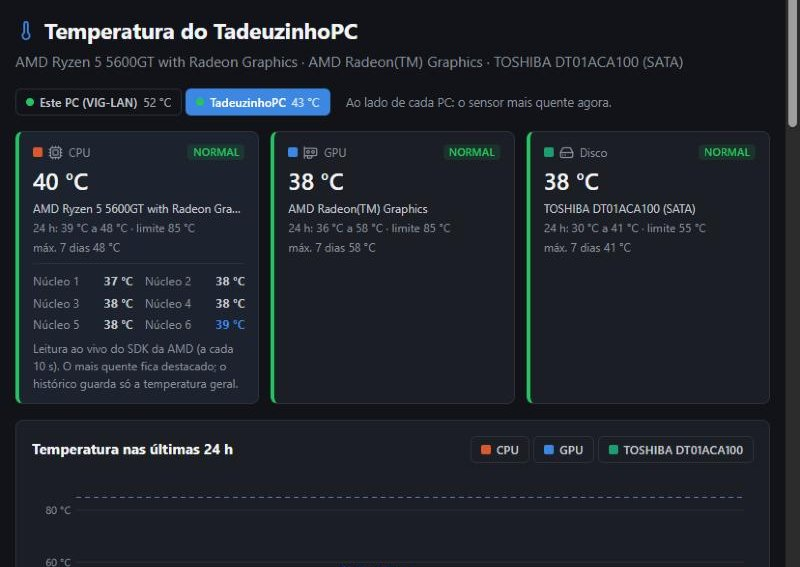 |
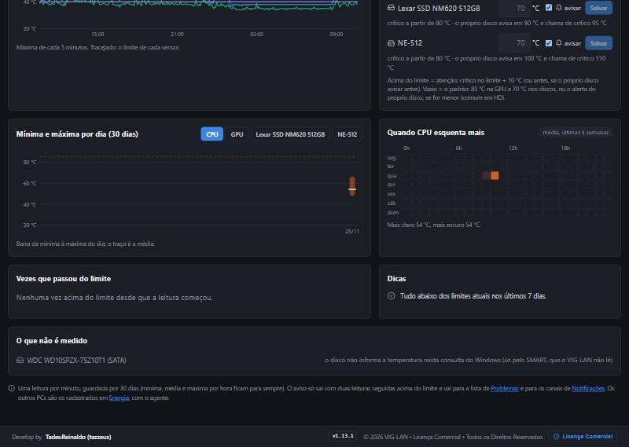 |
🌐 Apresentação Interativa (Para Clientes e Parceiros)
Você pode visualizar ou enviar a nossa Apresentação Comercial em página única (auto contida) para parceiros, clientes ou amigos:
- 📄 Abrir no navegador:
marketing/VIG-LAN-Apresentacao.html - Funciona direto no navegador (Chrome, Edge, Firefox), sem precisar de internet, e inclui simulação do sistema, imagens reais e tabela comparativa.
🖼️ Veja Como é a Tela do Sistema
| Mapa Visual da sua Rede (Topologia) | Detalhes de Cada Aparelho Conectado |
|---|---|
| Consumo de Velocidade (Quem gasta mais) | Teste de Velocidade da Internet (Speedtest) |
|---|---|
| Central de Alertas e Problemas | Qualidade e Sinal das Redes Wi-Fi |
|---|---|
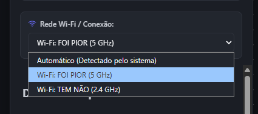 |
🚀 Como Começar (Instalação Super Simples)
Você não precisa ser técnico de informática para usar o VIG-LAN:
- Baixe o pacote do sistema: você receberá o arquivo compactado
VIG-LAN-v1.13.1-windows-x64.zip. - Extraia a pasta no seu computador (por exemplo, na pasta
C:\VIG-LANou na sua área de trabalho). - Execute o instalador: clique com o botão direito em
instalar.bate escolha "Executar como Administrador". - Pronto! O sistema configura tudo sozinho em menos de 1 minuto e abre o painel no seu navegador em
http://localhost:8080. - Você poderá copiar o código do seu computador na tela e nos enviar pelo WhatsApp para receber sua Chave de Ativação do Trial Grátis de 15 dias.
Já usa o VIG-LAN? Para atualizar, rode service\atualizar.ps1 como administrador: ele faz backup do banco antes de aplicar as mudanças. Se você tem o agente de energia em outro PC, atualize-o também para a versão do mesmo pacote (veja o LEIA-ME.txt do agente) para ter a temperatura daquele PC.
📱 Acessar de fora de casa (Tailscale)
O painel só abre no próprio PC (127.0.0.1:8080). Para vê-lo do celular em qualquer lugar sem expor nada na internet:
- Instale o Tailscale no PC do VIG-LAN e no celular, entrando com a mesma conta.
- No PC, rode
tailscale serve --bg 8080. Na primeira vez, ele mostra um link para ativar o recurso Serve na conta. - No celular, com o Tailscale ligado, abra o endereço
https://<nome-do-pc>.<sua-rede>.ts.netmostrado pelo comando.
Só os aparelhos da sua conta do Tailscale enxergam o endereço, com HTTPS, e o login do VIG-LAN continua valendo. Para desligar: tailscale serve --https=443 off. Não abra portas no roteador.
💳 Planos e Licenciamento
| Plano | Duração | Valor | Ideal Para |
|---|---|---|---|
| Trial de Avaliação | 15 Dias | Grátis | Testar todos os recursos na sua rede sem compromisso. |
| Trimestral | 3 Meses | R$ 97 | Diagnósticos rápidos, eventos ou auditorias pontuais. |
| Semestral | 6 Meses | R$ 147 | Residências e pequenos escritórios (R$ 24,50/mês). |
| Anual (Mais Popular) | 1 Ano | R$ 247 | Máxima economia e proteção contínua (R$ 20,58/mês). |
| Parceiros / Consultores de TI | Sob Medida | Negociável | Pacotes com múltiplas licenças para prestadores de serviços. |
Para solicitar um teste grátis ou tirar dúvidas:
📲 Fale direto pelo WhatsApp: Clique aqui para conversar com TadeuReinaldo
👨💻 Área Técnica e de Desenvolvedores
Esta seção é destinada a engenheiros de software, administradores de rede e desenvolvedores que desejam executar o código-fonte, contribuir ou auditar a arquitetura do sistema.
🏗️ Arquitetura Tecnológica
- Backend: Python 3.12 + FastAPI de alta performance e baixa latência.
- Descoberta Nativa Windows: Chamadas diretas à API
iphlpapiviactypes(sem necessidade de Npcap/WinPcap e sem portas fixas abertas, evitando alertas de firewall). - Escuta Passiva e SSDP/mDNS: Unicast efêmero para mapeamento de aparelhos inteligentes (Smart TVs, Tuya, Chromecast, impressoras).
- Banco de Dados: SQLite com modo WAL (Write-Ahead Logging) e rotina de backup consistente a quente.
- Frontend: React 19 + TypeScript + Vite, motor gráfico XYFlow para renderização dinâmica de topologia e WebSockets para atualização instantânea em tempo real.
- Energia do PC: contadores do Windows (PDH e log de eventos) via
ctypes, sem administrador: medidor RAPL do processador e uso de CPU/GPU por programa. - Temperatura: GPU pela D3DKMT (a mesma leitura do Gerenciador de Tarefas) e SSDs pelo
IOCTL_STORAGE_QUERY_PROPERTY, viactypes, sem administrador; CPU Ryzen pelo AMD Ryzen Master Monitoring SDK (ctypes, com administrador). - Serviço 24/7: Gerenciado via WinSW v2 na porta padrão
8080.
🛠️ Instalação a Partir do Código-Fonte
Para rodar o ambiente de desenvolvimento local:
- Execute o script automatizado na pasta
instalacao/INSTALAR.batou inicie via terminal:
# Modo de desenvolvimento local (Frontend em 5173 e Backend em 8000 com Hot Reload)
.\dev.ps1- Endpoints principais:
- Painel de Desenvolvimento:
http://localhost:5173 - Documentação Swagger Interativa:
http://127.0.0.1:8000/docs - Painel do Serviço em Produção:
http://localhost:8080
- Painel de Desenvolvimento:
🐧 Rodar no Linux com Docker (Raspberry Pi ou servidor ligado 24 h)
Num host Linux na mesma rede (no Docker Desktop do Windows/macOS a "rede do host" é a da VM do Docker, não a sua LAN):
docker compose up -d- Interface em
http://IP-DO-HOST:8080. Os dados ficam em./data(banco, backups esecret.key, a chave que cifra os segredos dos canais). - O
compose.yamlusanetwork_mode: host(para varrer a LAN) e monta o/etc/machine-iddo host (a licença é presa à máquina). - No Linux não há: bloqueio neste PC (é o Firewall do Windows), redes Wi-Fi do PC e escuta de DHCP (usa o Npcap do Windows).
🧪 Verificações de Qualidade e Testes Automatizados
# Bateria de testes unitários do Backend
backend\.venv\Scripts\python.exe -m pytest backend/tests
# Validação e formatação de código Python (Ruff)
backend\.venv\Scripts\python.exe -m ruff check backend
backend\.venv\Scripts\python.exe -m ruff format --check backend
# Linters, formatação e build do Frontend React
npm --prefix frontend run lint
npm --prefix frontend run format:check
npm --prefix frontend run build📜 Propriedade Intelectual & Direitos Autorais
O VIG-LAN é um produto de software comercial com código proprietário e fechado, de titularidade e desenvolvimento exclusivo de TadeuReinaldo (tazzeus):
- Direitos Reservados: Todos os direitos patrimoniais, autorais e industriais são estritamente reservados ao autor (Lei nº 9.609/1998 e Lei nº 9.610/1998). O software não é de código aberto e não é de domínio público.
- Termos de Uso: O uso, execução ou distribuição são permitidos exclusivamente mediante emissão de licença comercial válida. Proibida qualquer revenda não autorizada ou engenharia reversa.
- Contato Oficial: WhatsApp (79) 98107-2266 • GitHub: @tazzeus • Instagram: @tazzeus
Develop by TadeuReinaldo - tazzeus — @tazzeus
VIG-LAN: Segurança, Clareza e Controle da sua Rede sem Complicações.